Переменный ток — любой ток, изменяющийся во времени. Наиболее широкое применение нашёл синусоидальный переменный ток частотой 50 Гц.
Переменный ток — это вынужденные электромагнитные колебания
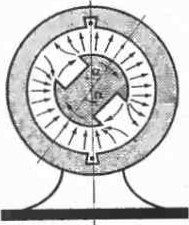Генератор переменного тока
Магнитная индукция в зазоре ротора (вращающегося постоянного магнита или электромагнита) и статора (неподвижного сердечника с обмоткой) изменяется по закону:
b = Bm cos α = Bm cos ωt
Магнитный поток через контур равен Φ = bS, а индукционное электрическое поле имеет ЭДС: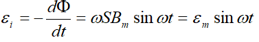
Средняя мощность переменною тока за период равна: 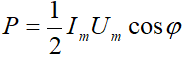
АКТИВНАЯ НАГРУЗКА В ЦЕПИ ПЕРЕМЕННОГО ТОКА
Активная нагрузка — это устройства, полностью и необратимо преобразующие электрическую энергию в другие виды энергии (тепловая энергия, энергия излучений и другие). Сопротивление таких устройств называют активным (омическим) сопротивлением; и обозначается R
В цепи переменного тока с активной нагрузкой колебания силы тока совпадают по фазе с колебаниями напряжения:
u = Um sin ωt
i=Im sin ωt
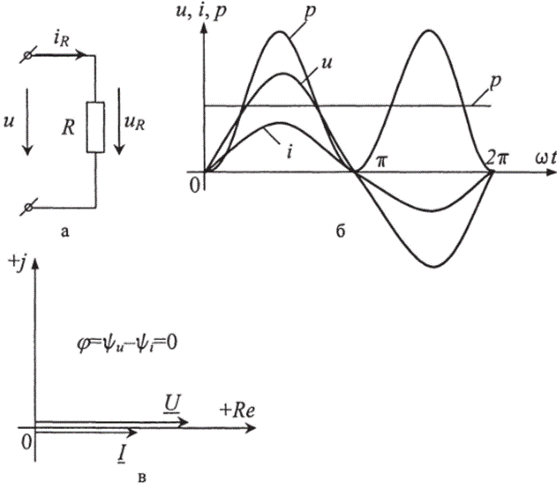
За каждый период Т при прохождении электрического переменного тока по проводнику с активным сопротивлением R выделяется количество теплоты Q, где I — действующее значение силы тока (на активном участке) :
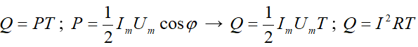
Действующими значениями напряжения и силы тока называют значения напряжения и силы постоянного тока, при протекании которого по цепи выделяется такое же количество, как и при переменном.
Действующие значения силы тока и напряжения равны: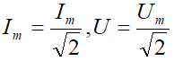
Активное сопротивление равно отношению мощности необратимо преобразованной электромагнитной энергии к квадрату действующего значения силы тока: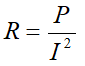
Для цепи с активной нагрузкой u = Um sin ωt i=Im sin ωt
КОНДЕНСАТОР В ЦЕПИ ПЕРЕМЕННОГО ТОКА
Емкостное сопротивление — сопротивление Хс, оказываемое переменному току электрическим полем конденсатора.
Емкостное сопротивление равно: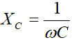
где ω — циклическая частота переменного тока, а С— емкость конденсатора
В цепи переменного тока с конденсатором происходит только периодический обмен энергией между генератором и конденсатором без необратимого преобразования электромагнитной энергии. Емкостное сопротивление ограничивает силу тока в цепи, как и активное сопротивление, но не преобразует энергию электромагнитного поля в другие виды энергии. Сдвиг по фазе между колебаниями силы тока и напряжения при емкостной нагрузке равен π/2:
u = Um sin ωt i=Im cos ωt=Im=sin(ωt+ π/2)
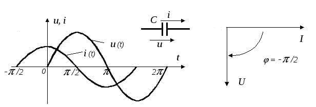
Средняя за период мощность переменного тока в цепи, содержащей только конденсатор, равна нулю.
КАТУШКА ИНДУКТИВНОСТИ В ЦЕПИ ПЕРЕМЕННОГО ТОКА
Индуктивное сопротивление — сопротивление ХL оказываемое переменному току индукционным электрическим полем.
Индуктивное сопротивление равно ХL = Lω, где ω – циклическая частота переменного тока, а L –индуктивность цепи.
В цепи переменного тока с катушкой индуктивности происходит периодический обмен энергией между генератором и катушкой без необратимого преобразования электромагнитной энергии. Колебания силы тока в цепи. содержащей только катушку индуктивности, отстают от колебаний напряжения на π/2:
u = Um cos ωt=Um sin( ωt- π/2) i=Im sin ωt
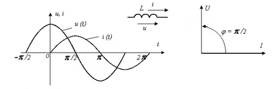
Средняя за период мощность переменного тока в цепи, содержащей только конденсатор, равна нулю.
R, C, L В ЦЕПИ ПЕРЕМЕННОГО ТОКА
Полное сопротивление переменного тока Z - величина, равная отношению действующего ( или амплитудного) значения напряжения к действующему (или амплитудному) значению силы тока: 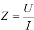
При последовательном включении R, XL, XC оно равно: 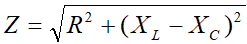
Закон Ома для цепи переменного тока: сила тока в цепи равна отношению напряжения, создаваемого в цепи генератора, к полному сопротивлению цепи переменного тока
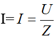
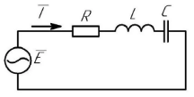
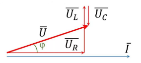
В формуле P=IUcosφ, где cosφ показывает, какая часть электрической энергии преобразуется в другие виды энергии. Эта величина называется коэффициентом мощности. Уменьшение величины cosφ приводит к неполному использованию мощности источников переменного тока и к увеличению тепловых потерь в цепи.
ТРАНСФОРМАЦИЯ ПЕРЕМЕННОГО ТОКА
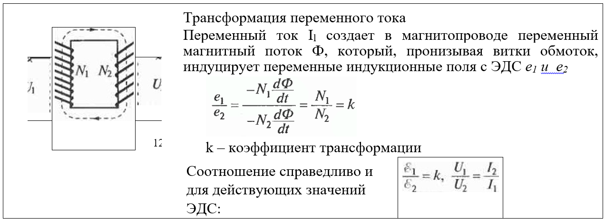
ПЕРЕДАЧА ЭЛЕКТРИЧЕСКОЙ ЭНЕРГИИ
Потеря мощности в проводах равна: 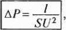 то есть уменьшить потери в линии электропередачи длиной l можно, увеличивая сечение проводов S и напряжение U. На практике используют оба пути. U повышают более, чем до 106 В. При больших переменных напряжениях резко возрастают потери из-за коронного разряда. Потери становятся значительно меньше при использовании постоянного тока.
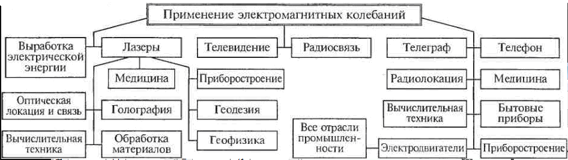